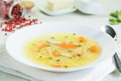

Alimentos Sanos Para Toda La Familia

Alimentos Sanos Para Toda La Familia
Todos los platos son orgánicos, sin gluten, y para toda la familia
|  | Sopa Caliente |
| Ensalada | |
| Pasteles Dulces | |
| Zumos |
Comer sano.
Dirección: Avenida CARDENAL BENLLOCH Nº 104. C.P. 46022 VALÈNCIA
Tel: 963 8108010